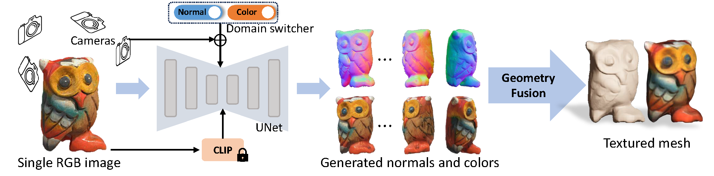

*Equal contributions
1The University of Hong Kong
2Tsinghua University
3VAST
4miHoYo Inc.
5AnySyn3D
6University of Pennsylvania
7Shanghai Tech University
8MPI Informatik
9Texas A&M University
In this work, we introduce Wonder3D, a novel method for generating high-fidelity textured meshes from single-view images with remarkable efficiency. Recent methods based on the Score Distillation Sampling (SDS) loss methods have shown the potential to recover 3D geometry from 2D diffusion priors, but they typically suffer from time-consuming per-shape optimization and inconsistent geometry. In contrast, certain works directly produce 3D information via fast network inferences, but their results are often of low quality and lack geometric details. To holistically improve the quality, consistency, and efficiency of image-to-3D tasks, we propose a cross-domain diffusion model that generates multi-view normal maps and the corresponding color images. To ensure consistency, we employ a multi-view cross-domain attention mechanism that facilitates information exchange across views and modalities. Lastly, we introduce a geometry-aware normal fusion algorithm that extracts high-quality surfaces from the multi-view 2D representations. Our extensive evaluations demonstrate that our method achieves high-quality reconstruction results, robust generalization, and remarkable efficiency compared to prior works.
Overview of Wonder3D.